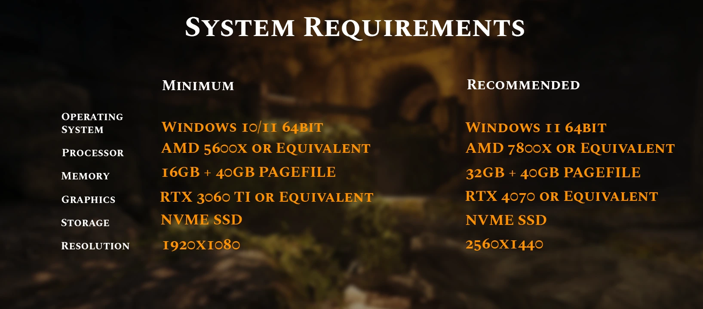
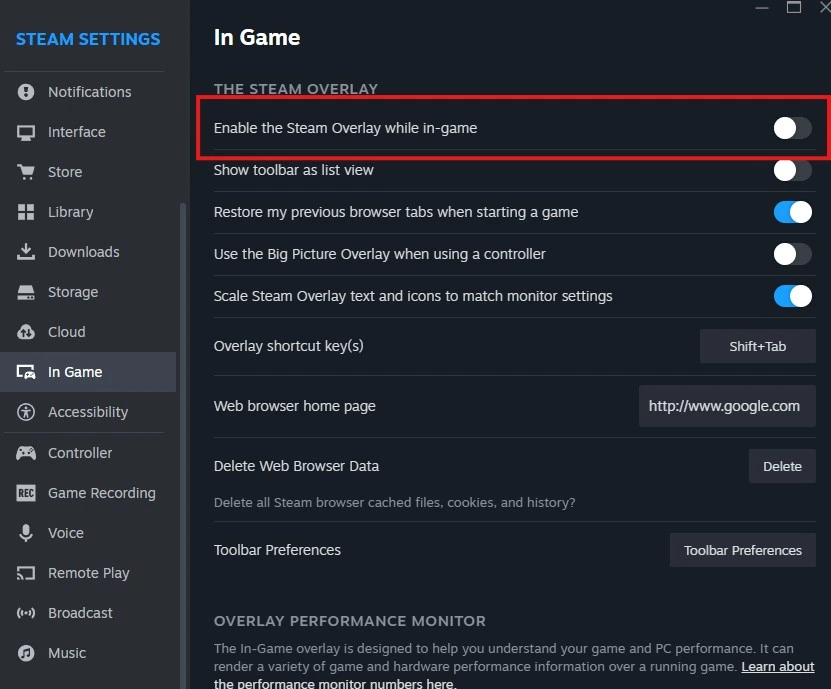

System Requirements
- SkyGround Chronicles only supports English Steam versions of full Skyrim AE. GOG and other languages are not supported.
- HDD and external SSD installs are absolutely not supported.
- Any remote PC / desktop services or apps are not supported, including Steam Link.
- Only Windows 10/11 operating systems are supported. Windows LTSC, special variants, lightened editions, or any other modified variant will not work.
- At least 8GB of GPU VRAM minimum is recommended for the list (1080p), otherwise you'll experience frequent stutters in exteriors. Higher resolutions may require even more.

Pre-Installation
General Utilities
Before installing SkyGround Chronicles, please install .NET. It is a free, cross-platform, open-source developer platform for building many different types of applications. This is required for Synthesis and Scrambled Bugs to function properly.
.NET SDK
Microsoft Visual C++ Redistributable
Steam Overlay
The Steam Overlay is known to cause issues while playing Skyrim Special Edition and should be disabled.
Click Steam in the top toolbar
Open Settings
Select the In-Game tab
Disable "Enable the Steam Overlay while in-game"

Antiviruses
Remove or disable any 3rd party antiviruses such as Webroot or Bitdefender. These programs can cause issues with your installation due to how MO2's Virtual File Staging works. You will also need to add the Wabbajack list folder to your antivirus exclusion list. Otherwise, the game may have trouble loading scripts, which can lead to crashes.

Other Notes
- Set your Skyrim language to English: right-click Skyrim in Steam, click Properties, then set the language to English in the drop-down.
- (Soft Requirement) A Nexus Premium account is recommended. Without Premium, you will need to manually click the Slow Download button for each mod.
Download List
Download NowPagefile & Crash Prevention
Larger Skyrim modlists require a significant amount of memory, and running out of memory will result in crashes and other potential issues.
If you have less than 32GB RAM, please use 61440 instead of 40960 in Initial Size (MB) and Maximum Size (MB).
To set up your pagefile
2. Type sysdm.cpl ,3 and hit ENTER
3. Navigate to Performance and click the box "Settings..."
4. Click the Advanced tab at the top
5. Under Virtual Memory, click the box "Change..."
6. Uncheck Automatically manage if it is checked
7. Select your disk drive, ideally your fastest solid state drive
8. Click the Custom size: button
9. In the box next to Initial Size (MB) type 40960
10. In the box next to Maximum Size (MB) type 40960
11. Click the Set button
12. Click OK
13. Click Apply
14. Click OK
15. Restart your computer for the new pagefile to take effect